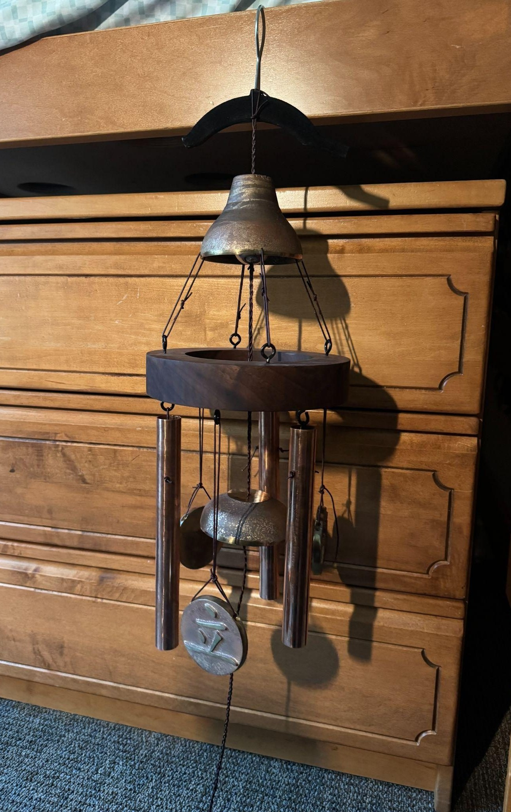
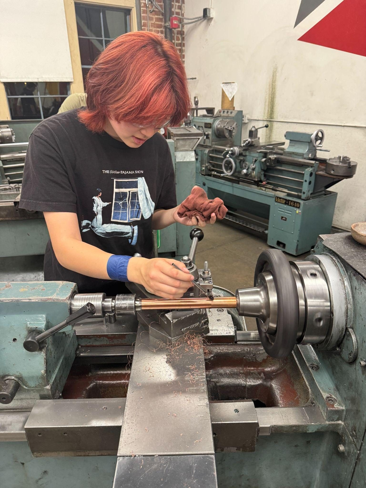
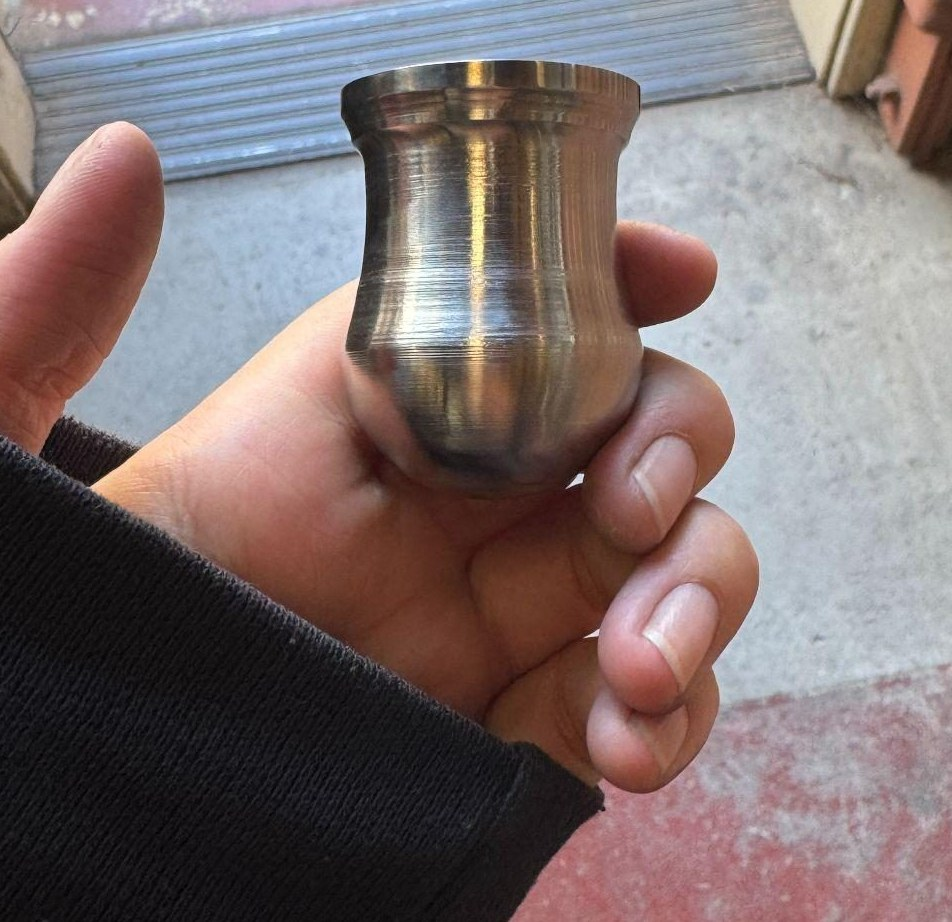
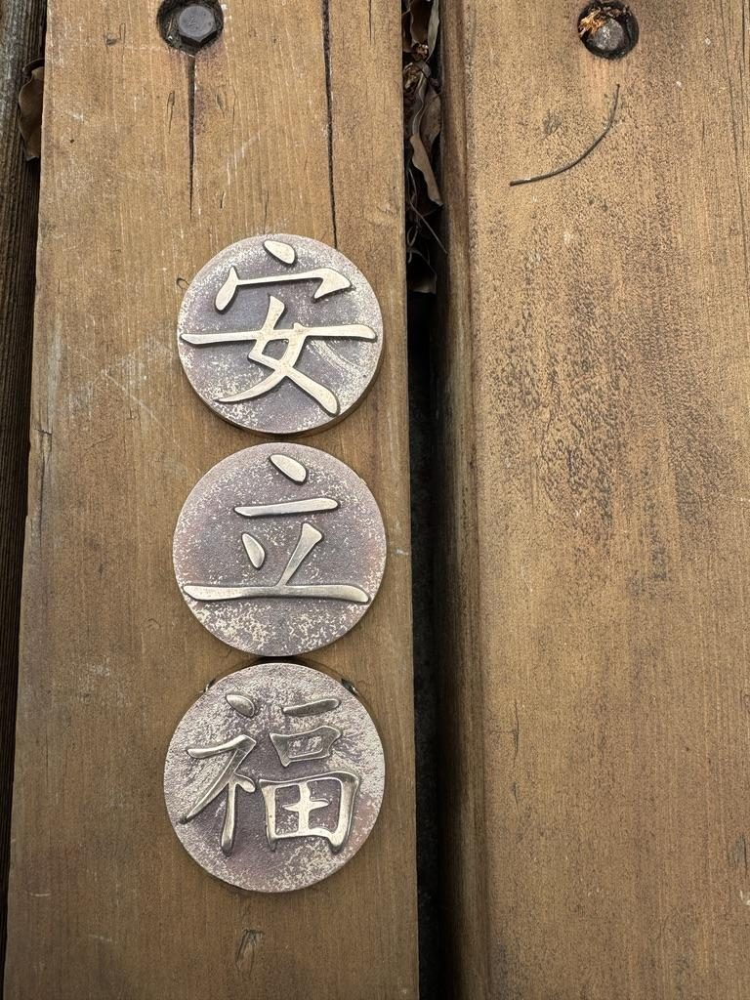
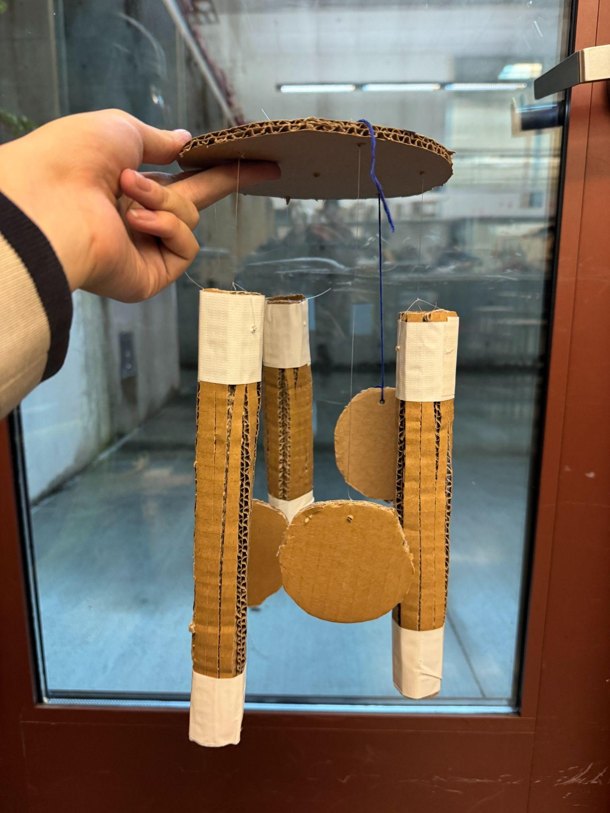
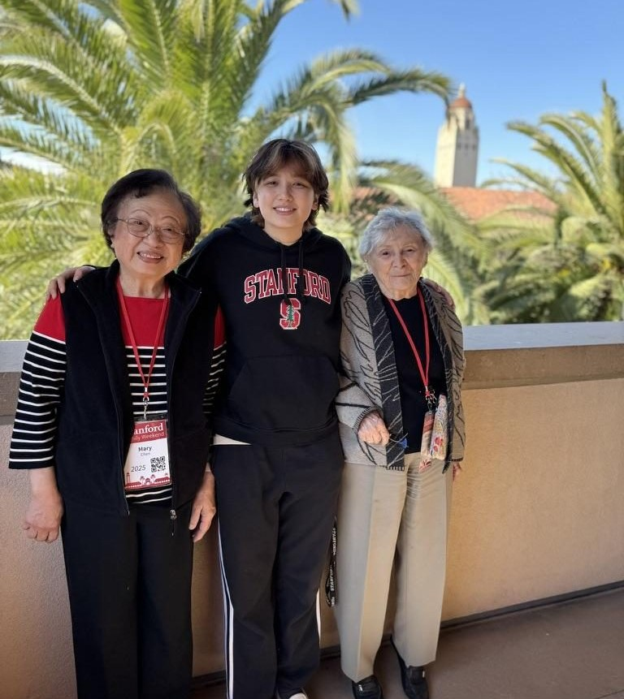

Objective
This year, my grandma moved into a retirement home and was nervous about the change, so I wanted to use this class to make her something that would remind her of family. She also had a balcony for the first time, so a wind chime felt like a fitting way to decorate it. In many Chinese names, siblings' names share the same first character — so for the chime's medallions, I cast the characters 立 (stand), 安 (peace), and 福 (luck) to represent me, my sister, my mom, and my uncle (陳安捷, 陳安怡, 陳立慧, 陳立明).


Design & Prototyping
Much of the prototyping stage was spent exploring balance, both physically and aesthetically. I realized a central ring would balance better than my original design, especially since many of the parts would be cast and therefore not perfectly round. Working in CAD gave me a better intuition for spacing and scale — important since I was planning to cast many of the pieces.
Fabrication
My main processes were casting and turning. I cast the upper bell, central ringer, and character medallions in bronze — the hardest part was getting clean pulls from the deeper bell cavity. On the lathe, I learned to use the radius cutter and auto-feed for the chimes and ringer.



Assembly
Assembly was more involved than expected, since the spacing and attachment between parts relied entirely on the leather string connecting them. I incorporated walnut to help balance and visually connect everything. Weight and string tension were an ongoing consideration — the central string actually snapped once, so I ended up braiding it for extra strength.


Reflection
I really enjoyed learning the manufacturing processes this project involved. Next time, I'd spend more time thinking about the specific sounds I want the chime to make, and do more research on the acoustics of wind chimes. I also ended up embracing the rustic, weathered look of my cast finishes rather than fighting it.